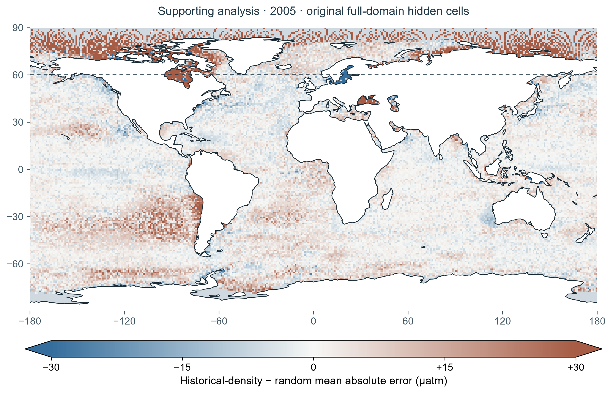

{kind=link}
{kind=link}
Gloege et al. (2021) ↗
Large Ensemble Testbed, model truth and temporal reconstruction skill. Our three yearly fits do not test that temporal scope.
Ocean carbon / A visual research story
We cannot measure everywhere. If we can take the same number of measurements, how much does choosing different places change the map we build?
A research story about ocean carbon, missing observations and a controlled computer experiment.
01 · Start with the real problem
Ships can measure surface-water CO₂ as they travel. But a ship visits a route, not the whole ocean—and one trip cannot tell us what happens everywhere, every month.
We use a computer model to estimate the missing places. That is reconstruction: turning scattered measurements into a more complete map.
The quantity here is pCO₂, a measure of CO₂ pressure in seawater—not a direct map of carbon uptake. How shipboard CO₂ measurements work · NOAA ↗

A CTD deployment, not the specific surface pCO₂ system used in the study. Context imagery, not a source of the values below.
With 5,000 measurements either way, does where we measure change how well we estimate the places we did not see?
02 · What has actually been observed?
Explore SOCAT observations before looking at the experiment. Yellow means higher surface-water fCO₂; purple means lower. Empty water means no displayed observation—not zero CO₂.
fCO₂ is CO₂ fugacity, closely related to partial pressure—not dissolved-carbon concentration, model error or carbon uptake. “All available months” averages only months with observations; it is not a complete annual mean.
Source: Bakker et al. (2025), SOCAT v2025 ↗, 1° monthly gridded product. Monthly colours use the per-cruise-weighted fCO₂ mean. All-month colours are equal-weight means of available monthly values. These are grid-cell centres, not exact ship positions. Counts sum the observations behind the displayed monthly records, not dots or unique cruises.
Three years match the OSSE study years (2005, 2010, 2014); the default is 2014. This context view is not the historical-density sampling mask, which uses 1990–2004 counts. Observed fCO₂ values are not used as the OSSE truth or to score its predictions.
Missing observations are not filled. Colours saturate below 200 and above 600 µatm; point inspection and downloads retain actual values. All finite observed values are retained, including extremes. Land covers symbols for readability only; some coastal grid centres may be covered. Blank map areas do not prove permanent absence of observations, especially outside the displayed dates.
Monthly values & provenance (JSON) · Original dataset downloads ↗ · Reproduce this view ↗
We thank the SOCAT data providers, researchers, funding agencies, data managers and quality controllers. SOCAT is an international effort endorsed by IOCCP and SOLAS. Methods: Bakker et al. (2016) and Sabine et al. (2013). Please follow the SOCAT data-use statement.
03 · How we test the question
In the real ocean, we cannot check every missing place. In a simulated ocean, we can hide known values, predict them, and check how wrong we were.
RandomGive each eligible location-month an equal chance.
Historical-densityPrefer places and months with more past SOCAT observations—not actual ship routes.
CoverageSpread measurements across space and months by prioritizing underrepresented blocks.
One IPSL-CM6A-LR simulation · one fixed HistGradientBoosting learner · 2005, 2010, 2014 · 20 paired seeds. Each observation is one location in one month, not one ship or one voyage.
Holdout happens before training. Strategies share the same test set, sample count, model settings and paired seeds. The primary evaluation hides scattered month-cells; the stress test hides entire blocks. In the primary and aligned stress-test comparisons, both sampling and evaluation are restricted to <60°N and errors are area-weighted.
The simulated observations have no added measurement error. The experiment compares idealized placement rules, not feasible ship routes, deployment costs or a universally best observing network. The full-domain supporting maps below use a different, clearly labelled scope.
04 · Now explore the experiment
Choose a plan to see its measurements. Switch the view to see its errors. Unlike the observed CO₂ globe above, this globe shows simulated experiments—not real measurements.
The white land layer is drawn above all data symbols. It can cover coastal block centres and inland-water values because the simplified land basemap does not distinguish every water body. This is a cartographic overlay, not a scientific exclusion mask or a correction to the experimental domain. Covered values remain in downloads and coordinate inspection; visible dots alone do not sum to the full sample count. The inland-water eligibility issue remains under review.
The globe uses real geographic coordinates, not real ship tracks. Sampling dots mark 5° × 10° block centres from one seed. Error dots show saved local MAE averaged over 20 seeds and available hidden months, without smoothing or new predictions. These are different aggregations: a sampling dot and an error dot are not a paired observation. No route or marginal benefit of adding a sample is inferred.
Error layers retain missing locations in grey. The MAE colour scale clips at 60 µatm and the difference scale at ±30 µatm; inspected values are not clipped. The dotted 60°N line is a reference, not a domain mask. Land is from Natural Earth, rendered using D3 orthographic projection.
Coordinate inspection selects the nearest saved location or sampling block, which may not be at the coordinates entered. Its actual position is shown in the readout. Globe values and provenance (JSON) · Full-precision historical-minus-random values (CSV) · D3 license. All original flat maps remain below.
Design map · not model error

Random samples candidate month-cells with equal probability.
5° latitude × 10° longitude summary blocks. More blocks is a design property, not proof of lower error.
Illustrative full-domain selection · 2005 · seed 0 · 5,000 observations each. Not the aligned-domain primary runs. Select the map to enlarge.
Historical-density draws month-cells without replacement using SOCAT 1990–2004 count weights. It does not replay cruises or repeat lines. Coverage prioritizes underrepresented month-space blocks; random gives each candidate equal probability. None models feasible ship routes.
Dots summarize 5° × 10° blocks, while shading uses the finer mapped grid. A historical-density dot can overlap a grey cell even though its observations lie in supported cells elsewhere in that block. Random and coverage are not restricted to historical support. The bar chart counts distinct occupied spatial blocks, not month-space blocks or the share of samples in zero-support cells.
05 · What we found · lower error is better
MAE = average absolute error. 5,000 samples · area-weighted · both domains <60°N. Each row averages 20 paired seeds; rows are not independent ESM replicates.
Primary: 3 year means on one fixed, month-stratified hidden set per year. Stress test: 15 year–fold means with complete blocks held out. Connecting lines pair two strategies on the same test set; they are not confidence intervals. The horizontal axis is zoomed, not zero-based. Larger MAE means larger typical absolute error. These magnitudes are conditional on this learner and model truth.
Source: paired unit results ↗Results / Does the scoring choice change the answer?
Historical-density relative to random. Right of zero = higher MAE. These are correlated evaluation variants, not 12 independent tests.
Weighting: equal grid cells or spherical cell area. Domain: full; evaluation only <60°N; or both candidates and evaluation <60°N. The primary comparison is hidden-cell, area-weighted, both domains <60°N. Changing domains can also change the training pool. Positivity across these settings does not establish robustness to another learner, ESM or real observing network.
Frozen result contract ↗Supporting spatial evidence · not the primary scope

Enlarge map ↗ · Colour saturates at ±30 µatm; arrowheads indicate values beyond the scale.
Each mapped value subtracts the saved random mean absolute error from the historical-density mean absolute error, averaged over 20 paired seeds and the available hidden months at that location. All 40,624 source locations are retained in the download; 37,920 have paired error estimates and 2,704 have none. Missing values are not zero, and grey water does not mean historical zero support.
The colour scale saturates for 115 locations below −30 and 2,169 above +30 µatm; no values are removed or altered in the data. There is no smoothing and no statistical-significance overlay. Coastlines are a cartographic reference.
This is the original full-domain analysis, not the primary aligned <60°N experiment. Cropping the map cannot reproduce its training pool. The map shows error differences—not the benefit of adding observations at a location. No models were retrained.
Map values (CSV) · Provenance & range · SVG · PDF · Reproduce the figure ↗
Results / Is spreading out always better?
Coverage − random, µatm · hidden cells · full domain · equal-cell weighting. Below zero = lower error. Counts are equally spaced categories, not a linear axis.
Median describes the middle absolute error; p99 is the error threshold exceeded by about 1% of evaluated cells. RMSE gives larger errors extra weight, so it is not a separate proof of an overall improvement.
The four-count sweep exists only for the original full-domain, equal-cell evaluation. No aligned <60°N, area-weighted sweep has been run. Its magnitudes and reversal threshold cannot be transferred to the primary result. Lines connect four tested counts, not an estimated continuous learning curve. Hyperparameters remain fixed across counts.
A methodological self-correction
Whole-block stress test only. This audit explains a revised interpretation, not a universal global bias.
Historical-density − random signed bias, µatm. Categorical changes of weighting and domain; not a time series.
The final whole-block value is not the hidden-cell primary estimate. These settings share results and are not independent confirmations. The latitude cap is a domain restriction, not a sea-ice or physical-access mask.
Methods & evidence
Hidden-cell evaluation reserves about 20% of month-cells within each month before sampling. One fixed set per year is shared across strategies and 20 paired seeds. Whole-block evaluation excludes all months in 20° × 10° blocks, using five checkerboard folds without a buffer.
Three years share one ESM run. The three primary year means and 15 stress-test year–fold means are descriptive units, not independent Earth-system replicates. No formal whole-block significance test is claimed. Neither protocol is full-field evaluation after unrestricted sampling.
The September 2026 presentation change foregrounds the existing hidden-cell analysis. It is a post-analysis reframing, not a newly preregistered protocol. Differences are computed before rounding.
Full evaluation scope & source notes ↗Cross-learner and cross-ESM robustness, noisy observations, full-field recovery, flux integration, sea-ice-aware access and feasible deployment plans remain not yet supported.
The regional diagnostic XGBoost models failed the spatially grouped generalization gate. Explaining those models would not establish scientific drivers.
Read the gate decision ↗Not a sampling-priority map. Colour shows the magnitude of seed-mean signed error times a spherical-area factor in historical zero-support cells. It includes locations north of 60°N, excluded from the primary result; it is not a decomposition of primary-domain MAE.
Archived outcome diagnostic · not marginal value

The supporting error map uses saved 2005 full-domain errors without retraining. The aligned-domain runs retain aggregate scores, not per-cell predictions. Clipping the old map to <60°N would not recreate the aligned training pool. A primary-scope penalty map is therefore not shown here.
Inspect the saved-field provenance ↗